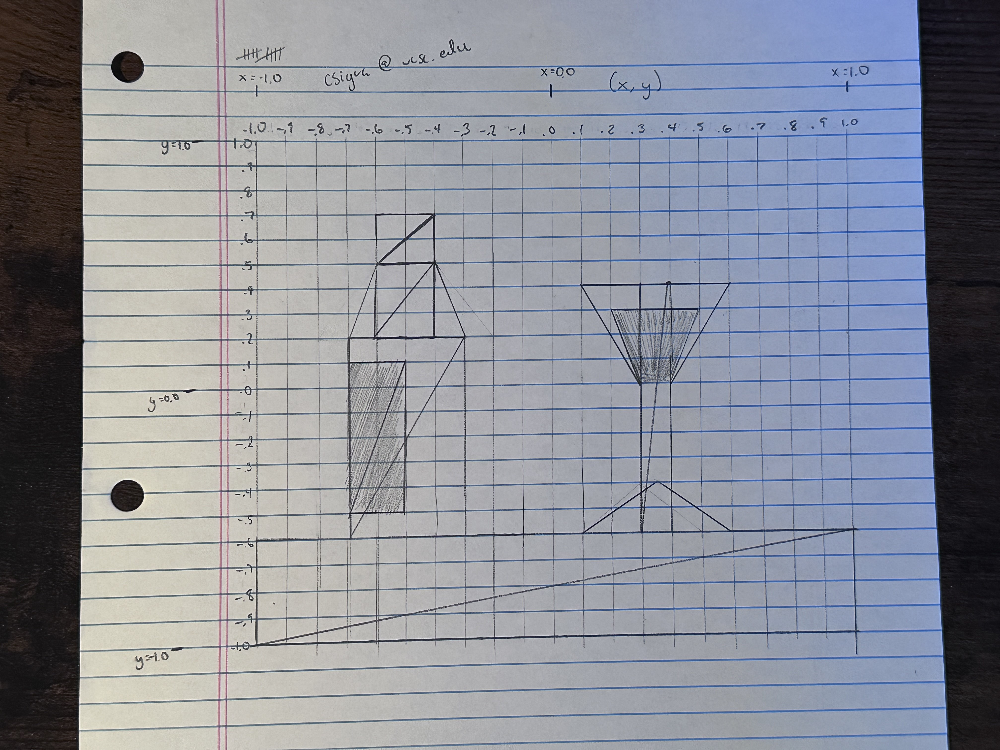

Christian Sigua
csigua@ucsc.edu
Awesome stuff! :)I added a preview for the color you're going to paint with, as well as a "RAINBOW MODE" that makes the brush paint with rainbow colors.
There's also the option to change how "fast" the rainbow is, that is, how quickly it cycles between colors.
In addition to those things, I also decided to add a color preview box so you can see what color you're using before you paint.For the image, I decided to do a wine bottle and a wine glass on a purple background. Click the "DRAW REALLY COOL IMAGE!!" button to check it out!
(also for no particular reason at all you should see what happens when you clear the canvas)
Drawing mode:
Shape color:
Preview:
Red Green Blue
OFF
Rainbow Speed
Shape Size:
Segment Count:
